Angourakis - CDAL series
Cambridge, 5 February 2019
Agent-based modelling in archaeology
Why do it, how to do it, and what to expectAndreas Angourakis @AndrosSpica
available at
https://andros-spica.github.io/CDAL-Angourakis-2019/
https://andros-spica.github.io/CDAL-Angourakis-2019/index.html?print-pdf (printable version)
https://andros-spica.github.io/CDAL-Angourakis-2019/index.html?print-pdf (printable version)
click on images to consult source
The 'why '
Archaeology
Challenges
- fragmentary, coarse data
- indirect evidence
- (mostly) not experimental
- semantic ambiguity
- few consensual models
- debate on core aspects
Opportunities
- long-term perspective
- materiality
- holistic, "naive", out-of-box thinking
- permeability to other disciplines
The prism of complexity science
- Complex system
- complexity: number and diversity of causal relationships
- nonlinearity, self-organisation and self-similarity
-
Unifying frameworks:
- theoretical (e.g., generative social science, socio-ecological systems)
- methodological (e.g., open databases, GIS, ABM)
Breeder pattern in Conway's Game of Life
derivative work: George (talk)Conways_game_of_life_breeder.png: Hyperdeath [CC BY-SA 3.0 (https://creativecommons.org/licenses/by-sa/3.0)], via Wikimedia Commons
derivative work: George (talk)Conways_game_of_life_breeder.png: Hyperdeath [CC BY-SA 3.0 (https://creativecommons.org/licenses/by-sa/3.0)], via Wikimedia Commons
Agent-based modelling (ABM )
- dynamics
- Formalisation
- rules
- population
- bottom-up
- stochasticity
→ simulation
→ defined logic rules
→ algorithms
→ distributed processes
→ emergent properties
→ probabilistic results
Flocking behaviour in 'Behavioral systems' by Danil Nagy in
'Generative Design', medium.com


Background: pseudo-code for the Gale–Shapley algorithm
to solve the Stable Marriage Problem
to solve the Stable Marriage Problem
The 'how '
ABM modelling steps
 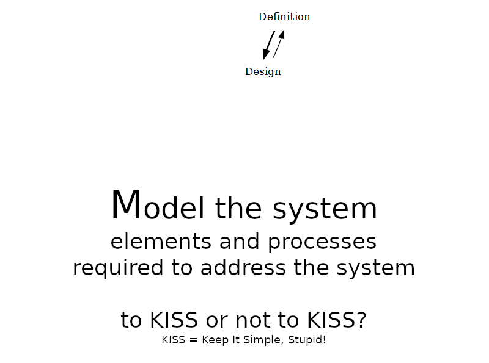
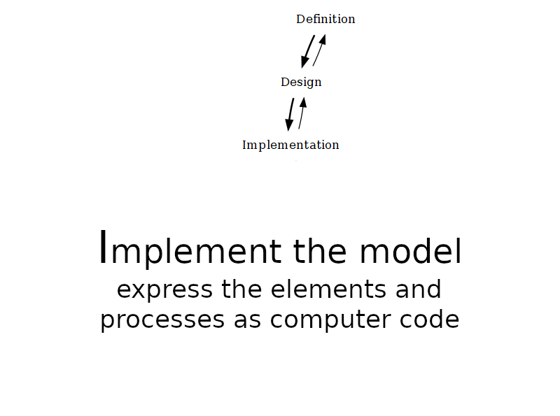
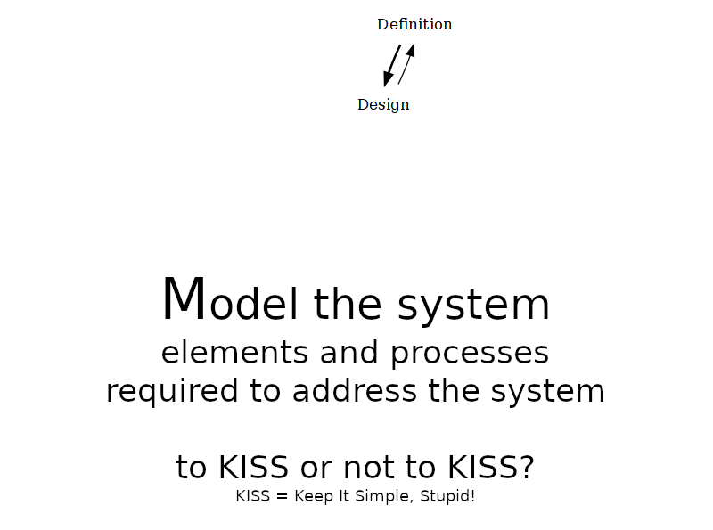
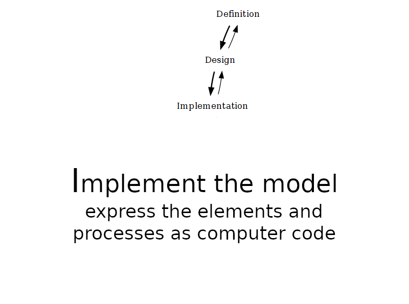
 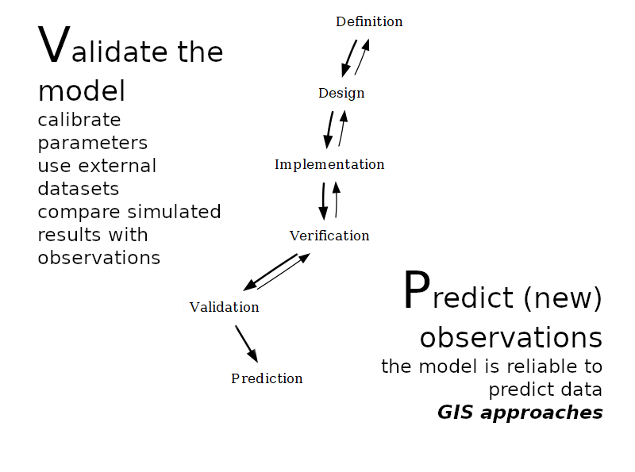
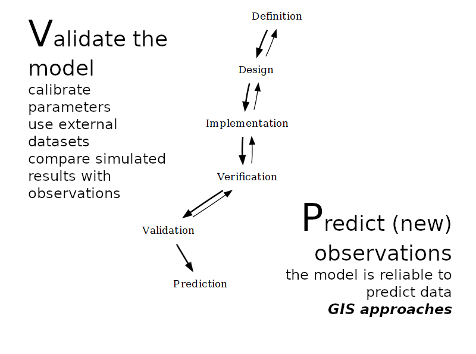
 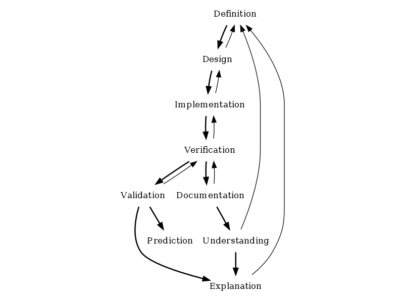
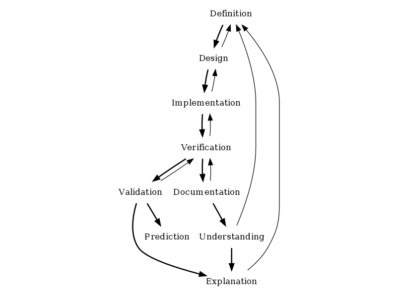
Examples
Schelling's Segregation model
- Definition:
the formation of racially mixed versus segregated neighborhoods in the United States (c. 1960-1970) - Design:
- two types of agents
- agents occupy a position in a grid
- adjacent positions are considered as neighborhood
- agent satisfaction = ratio of neighbors of the same type (homophily)
- unsatisfied agents move to another free position
Examples
Schelling's Segregation model
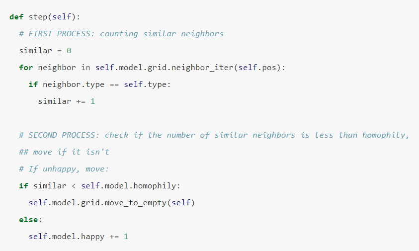
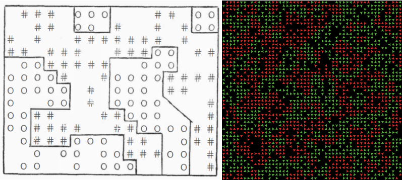
Examples
Schelling's Segregation model

Examples
Artificial Anasazi
Axtell, R. L., Epstein, J. M., Dean, J. S., Gumerman, G. J., Swedlund, A. C., Harburger, J., … Parker, M. (2002).
Population growth and collapse in a multiagent model of the Kayenta Anasazi in Long House Valley. Proceedings of the
National Academy of Sciences, 99(Supplement 3), 7275–7279.
https://doi.org/10.1073/pnas.092080799
Janssen, M. A. (2009). Understanding Artificial Anasazi. Journal of Artificial Societies and Social Simulation, 12(4). http://jasss.soc.surrey.ac.uk/12/4/13.html
Janssen, M. A. (2009). Understanding Artificial Anasazi. Journal of Artificial Societies and Social Simulation, 12(4). http://jasss.soc.surrey.ac.uk/12/4/13.html
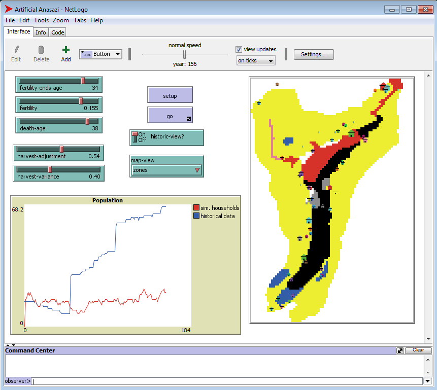
Examples
HOMINIDS
Griffith, C. S., Long, B. L., and Sept, J. M. (2010). HOMINIDS: An agent-based spatial simulation model to evaluate
behavioral patterns of early Pleistocene hominids. Ecological Modelling, 221(5), 738–760.
https://doi.org/10.1016/j.ecolmodel.2009.11.009
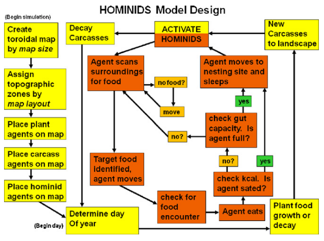

Examples
MedLanD
Barton, C. M., Ullah, I. I. T., Bergin, S. M., Mitasova, H., and Sarjoughian, H. (2012). Looking for the future in
the
past: Long-term change in socioecological systems. Ecological Modelling, 241, 42–53.
https://doi.org/10.1016/J.ECOLMODEL.2012.02.010
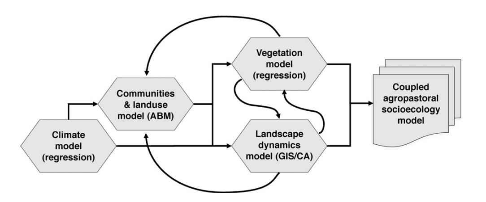

Examples
HouseholdsWorld
Rogers, J. D., Nichols, T., Emmerich, T., Latek, M., and Cioffi-Revilla, C. (2012). Modeling scale and variability in
human–environmental interactions in Inner Asia. Ecological Modelling, 241, 5–14.
https://doi.org/10.1016/J.ECOLMODEL.2011.11.025
 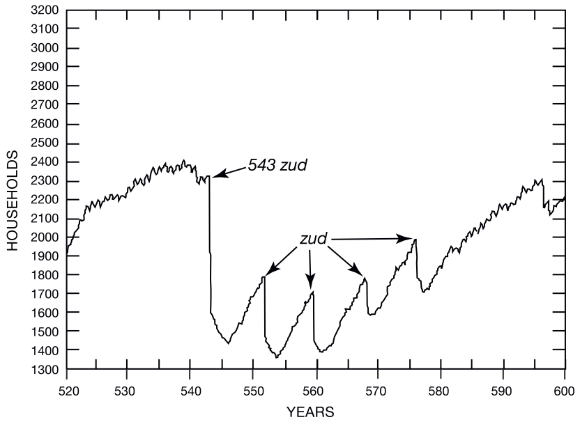
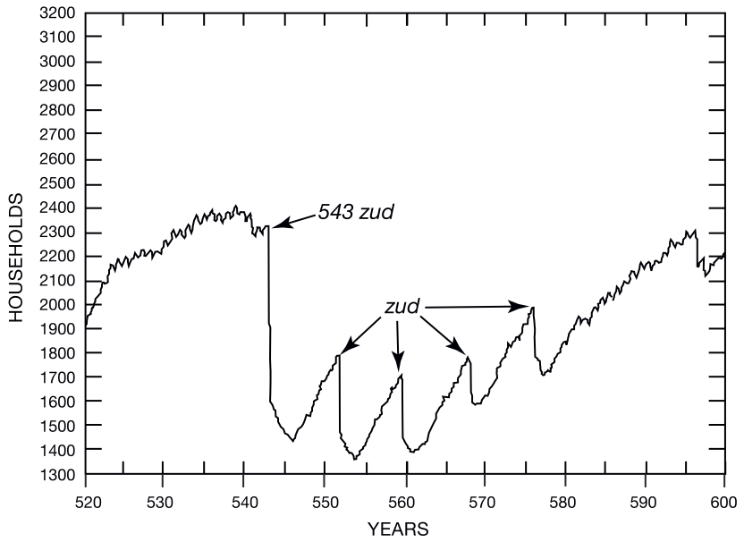
Expectations
Grand challenges (method)
- Disambiguation
- Consolidation of shared models
- Virtual laboratory
- Interdisciplinary approach
Epstein, J. M. (2008). Why Model? Journal of Artificial Societies and Social Simulation, 11(4), 12.
http://jasss.soc.surrey.ac.uk/11/4/12.html
Grand challenges (theory)
- Emergence of social and socio-ecological systems
- Resilience, adaptation, change, collapse
- Space and mobility
- Behaviour and cognition
Kintigh, K. W., Altschul, J. H., Beaudry, M. C., Drennan, R. D., Kinzig, A. P., Kohler, T. A., … Zeder, M. A. (2014).
Grand challenges for archaeology. Proceedings of the National Academy of Sciences of the United States of America,
111(3), 879–880.
https://doi.org/10.1073/pnas.1324000111

- Social processes linked to materiality
- Any spatial or time scale
- Data standardization and collection
- Theory building/hypothesis generation
Madella, M., Rondelli, B., Lancelotti, C., Balbo, A. L., Zurro, D., Rubio Campillo, X., & Stride, S. (2014).
Introduction to Simulating the Past. Journal of Archaeological Method and Theory, 21(2), 251–257.
https://doi.org/10.1007/s10816-014-9209-8
Rogers, J. D., & Cegielski, W. H. (2017). Opinion: Building a better past with the help of agent-based modeling. Proceedings of the National Academy of Sciences of the United States of America, 114(49), 12841–12844. https://doi.org/10.1073/pnas.1718277114
Cegielski, W. H., & Rogers, J. D. (2016). Rethinking the role of Agent-Based Modeling in archaeology. Journal of Anthropological Archaeology, 41, 283–298. https://doi.org/10.1016/J.JAA.2016.01.009
Rogers, J. D., & Cegielski, W. H. (2017). Opinion: Building a better past with the help of agent-based modeling. Proceedings of the National Academy of Sciences of the United States of America, 114(49), 12841–12844. https://doi.org/10.1073/pnas.1718277114
Cegielski, W. H., & Rogers, J. D. (2016). Rethinking the role of Agent-Based Modeling in archaeology. Journal of Anthropological Archaeology, 41, 283–298. https://doi.org/10.1016/J.JAA.2016.01.009
Caveats
- NOT magical solution!
- Still long way to set a "standard"
- Steep learning curve (for all involved)
- Inherits any theoretical/methodological biases
- Validation, documentation and understanding often underdeveloped tasks
Future?
Project Highrise
Agent-based modelling in archaeology
Why do it, how to do it, and what to expectAndreas Angourakis @AndrosSpica
THANK YOU!
available at
https://andros-spica.github.io/CDAL-Angourakis-2019/
https://andros-spica.github.io/CDAL-Angourakis-2019/index.html?print-pdf (printable version)
https://andros-spica.github.io/CDAL-Angourakis-2019/index.html?print-pdf (printable version)
click on images to consult source
further references
The-ABM-in-Archaeology-Bibliographyby Iza Romanowska and Lennart Linde